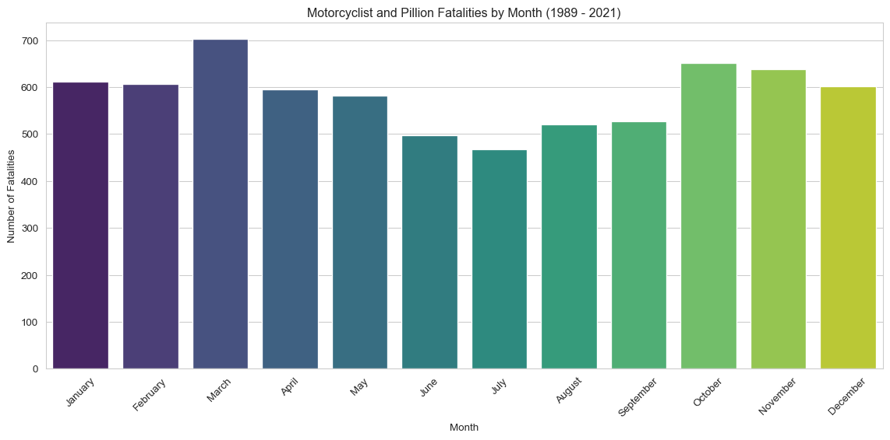

A sub-analysis of the ARDD focusing on fatal motorcycle crashes.
Motorcycle riding evokes freedom and exhilaration—but it also carries disproportionate risk. Despite advances in protective gear and rider assist technologies, motorcyclists remain significantly overrepresented in fatal crash statistics across Australia.
This sub-analysis investigates trends in fatal crashes involving motorcyclists and pillion passengers, drawing on over three decades of data. It aims to identify persistent risk patterns by year, state, and rider population, and to assess the relative burden on motorcyclists compared to their licensed population base.
1. Key Findings
Time and Day Matter (A Lot) Fatalities peak sharply on Saturdays and Sundays, particularly in the afternoon hours between 1 PM and 5 PM. This aligns with recreational riding patterns, where less experienced or infrequent riders may be pushing limits on unfamiliar or technical roads (“the twisties”).
Single-Vehicle vs Multi-Vehicle Crashes* A sizeable proportion of fatal crashes involve single vehicles, particularly on weekends. This supports the idea that weekend fatalities may disproportionately involve loss of control rather than collision with another vehicle—an angle worth further exploration.
Gender Disparity A staggering 93.7% of fatalities were male, highlighting not just a gendered exposure to risk but perhaps also cultural attitudes toward riding, risk-taking, and safety behaviors.
Age Distribution Fatalities skew young, peaking in the early 20s, then tapering with age—though a surprising number of older riders (60+) are still represented. The age distribution for female fatalities shows a bimodal pattern, possibly reflecting pillion vs rider roles.
Seasonal Variation Fatalities are higher in summer and spring, peaking in March, and lowest in the winter months, especially July. Not exactly surprising—cold rain is a great motivator to leave the bike parked—but the difference is notable.
2. Data Cleaning
This notebook is fully self-contained and begins with a structured data cleaning pipeline. The full_clean_pipeline() function (sourced from scripts/data_cleaning.py) performs the following steps:
Loads raw crash data from ../data/Crash_Data.csv
Cleans missing or inconsistent entries
Drops incomplete, redundant, or irrelevant columns
Returns a tidy, analysis-ready DataFrame
The cleaned dataset is then filtered to isolate fatal incidents involving motorcyclists and pillion passengers, forming the analytical base for this sub-study.
Code
"""This notebook is fully self-contained and does not depend on the main EDA notebook.The dataset is loaded and cleaned using `full_clean_pipeline()` from `scripts/data_cleaning.py`, which:- Loads raw data from /data/Crash_Data.csv- Cleans missing values and harmonizes variables- Drops incomplete or irrelevant columns- Returns a tidy, ready-to-analyze DataFrame"""# Set the directory for the scriptimport syssys.path.append("../scripts") # Importing necessary librariesimport pandas as pd import numpy as npimport matplotlib.pyplot as pltimport seaborn as snsfrom IPython.display import displayfrom data_cleaning import full_clean_pipelinedf = full_clean_pipeline()# Create variable for the earliest and latest years in the dataset to be dynamically displayed in plot titleslatest_year = df['Year'].max()earliest_year = df['Year'].min()print(f"The dataset contains data from {earliest_year} to {latest_year}.")# Define constants for reusemonth_names = {1: 'January', 2: 'February', 3: 'March', 4: 'April', 5: 'May',6: 'June', 7: 'July', 8: 'August', 9: 'September', 10: 'October',11: 'November', 12: 'December'}month_order = ['January', 'February', 'March', 'April', 'May', 'June', 'July','August', 'September', 'October', 'November', 'December']day_order = ['Monday', 'Tuesday', 'Wednesday', 'Thursday', 'Friday', 'Saturday', 'Sunday']custom_palette = {'Female': 'lightcoral', 'Male': 'skyblue'}# Filter for Motorcyclists and Pillion Passengersmotorcyclist_pillion_fatalities = df[df['Road User'].isin(['Motorcycle rider', 'Motorcycle pillion passenger'])]motorcyclist_fatalities = df[df['Road User'] =='Motorcycle rider']pillion_fatalities = df[df['Road User'] =='Motorcycle pillion passenger']# print("\nFiltered DataFrames created:")# print(f"- motorcyclist_pillion_fatalities: {motorcyclist_pillion_fatalities.shape[0]} rows")# print(f"- motorcyclist_fatalities: {motorcyclist_fatalities.shape[0]} rows")# print(f"- pillion_fatalities: {pillion_fatalities.shape[0]} rows")# # Check for missing values in the filtered DataFrames# print("\nMissing values in motorcyclist_pillion_fatalities:")# print(motorcyclist_pillion_fatalities.isnull().sum())# print("\nMissing values in motorcyclist_fatalities:")# print(motorcyclist_fatalities.isnull().sum())# print("\nMissing values in pillion_fatalities:")# print(pillion_fatalities.isnull().sum())
The dataset contains data from 1989 to 2021.
3. Data Visualisation
The following section presents key visualizations that explore how motorcycle-related fatalities have varied over time and by geography. These charts aim to highlight long-term trends, state-level differences, and contextualize deaths relative to the licensed rider population.
3.1 Yearly Fatalities
Code
# Group data by Year and Road User for the filtered setfatalities_by_year_user = motorcyclist_pillion_fatalities.groupby(['Year', 'Road User'])['Crash ID'].count().reset_index(name='Fatalities')# Capitalize the legend labelsfatalities_by_year_user['Road User'] = fatalities_by_year_user['Road User'].str.title()# Plotting raw numbers of Fatalitiessns.set_style('whitegrid')plt.figure(figsize=(12, 6))sns.lineplot(x='Year', y='Fatalities', data=fatalities_by_year_user, hue='Road User', marker="o")plt.title(f'Motorcyclist and Pillion Fatalities by Year ({earliest_year} - {latest_year})')plt.xlabel('Year')plt.ylabel('Number of Fatalities')plt.grid(True)sns.despine()plt.legend(title=None) # ← Removes legend titleplt.tight_layout()plt.show()
The above line graph shows that the number of motorcycle rider fatalities has not seen a significant decrease over the years, with no obvious trend. While the number of pillion fatalities has remained relatively stable.
However Australia’s population has increased substantially since 1989, so a more insightful comparison would be to look at the number of fatalities as a proportion of the number of motorcycle licences. License data from the Bureau of Infrastructure and Transport Research Economics (BITRE) goes back to 2013, so we will use that as our starting point. The following line graph shows the number of fatalities as a proportion of the number of motorcycle licences in Australia.
Integrating Motorcycle License Data
To contextualize fatality trends, we incorporated motorcycle licensing data from a BITRE. This dataset required substantial wrangling due to inconsistent formatting and labeling. Key preprocessing steps included:
Removing non-data rows
Forward-filling tier labels (Full, Provisional, L Permits)
Reshaping the data to align with crash statistics
Despite its structure, this dataset provides valuable insight by allowing normalization of fatalities per licensed rider—offering a more accurate picture of risk over time.
Code
def analyze_motorcycle_fatality_rates(motorcyclist_pillion_fatalities):""" Load motorcycle license data and calculate fatality rates per 10,000 licenses. Returns the prepared dataframe for plotting. """# 1. Load and process license data df_licenses = pd.read_csv("../data/motorcycle_licenses.csv", header=None, skiprows=1, skipinitialspace=True) # Define known license tier labels tiers = ["Full licence", "Provisional licence", "L Permits"]# Add a column to track the tier label df_licenses["tier"] = df_licenses[0].where(df_licenses[0].isin(tiers)).ffill()# Filter out rows that are just the tier labels themselves df_licenses = df_licenses[~df_licenses[0].isin(tiers)].copy()# Rename columns based on expected positionsif df_licenses.shape[1] ==9: # 8 original + 1 tier df_licenses.columns = ["date", "car", "motorcycle", "light_rigid", "medium_rigid", "heavy_rigid", "heavy_combination", "multi_combination", "tier"]else:print(f"Warning: Unexpected number of columns ({df_licenses.shape[1]}) in license data after adding tier. Check CSV structure.")return pd.DataFrame() # Return empty DataFrame if there's an error# Extract the last two digits after the hyphen two_digit_year = df_licenses["date"].str.extract(r"-(\d{2})$").iloc[:, 0]# Prepend '20' and convert to numeric (integer), handling potential errors df_licenses["year"] = pd.to_numeric("20"+ two_digit_year, errors='coerce')# Clean the motorcycle license count column df_licenses["motorcycle"] = ( df_licenses["motorcycle"] .astype(str) .str.replace(",", "", regex=False) .str.replace(" ", "", regex=False) .str.strip() .replace("", pd.NA) )# Convert motorcycle column to numeric, coercing errors to NA df_licenses["motorcycle"] = pd.to_numeric(df_licenses["motorcycle"], errors="coerce")# Drop rows where year extraction failed or motorcycle count is missing/invalid df_licenses = df_licenses.dropna(subset=["year", "motorcycle"])# Convert year and motorcycle count to integer type now that NAs are handledif df_licenses.empty:print("Warning: License DataFrame is empty after cleaning and dropping NAs. Cannot create summary.")return pd.DataFrame()# Convert year first as maybe it was float due to coerce df_licenses["year"] = df_licenses["year"].astype(int) df_licenses["motorcycle"] = df_licenses["motorcycle"].astype(int) # Group by year and sum the motorcycle licenses across all tiers license_summary = ( df_licenses.groupby("year")["motorcycle"] .sum() .reset_index(name="total_motorcycle_licenses") )# 2. Calculate total fatalities per year total_fatalities_per_year = ( motorcyclist_pillion_fatalities.groupby('Year')['Crash ID'] .count() .reset_index(name='total_fatalities') )# 3. Merge fatality data with license data merged_data = pd.merge( total_fatalities_per_year, license_summary, left_on='Year', right_on='year', how='inner'# Use inner merge to keep only years present in both datasets )# 4. Filter for the desired year range start_year_rate =2013 end_year_rate =2022 merged_data_filtered = merged_data[ (merged_data['Year'] >= start_year_rate) & (merged_data['Year'] <= end_year_rate) ].copy()# 5. Calculate the rate per 10,000 licenses merged_data_filtered['fatalities_per_10k_licenses'] = np.where( merged_data_filtered['total_motorcycle_licenses'] >0, (merged_data_filtered['total_fatalities'] / merged_data_filtered['total_motorcycle_licenses']) *10000,0# Or pd.NA if you prefer )return merged_data_filtered, start_year_rate, end_year_rate# Run the analysis functionmerged_data_filtered, start_year_rate, end_year_rate = analyze_motorcycle_fatality_rates(motorcyclist_pillion_fatalities)# Plot the rate over timeifnot merged_data_filtered.empty: plt.figure(figsize=(12, 6)) sns.lineplot( x='Year', y='fatalities_per_10k_licenses', data=merged_data_filtered, marker='o' ) plt.title(f'Motorcyclist & Pillion Fatalities per 10,000 Licenses ({start_year_rate}-{end_year_rate})') plt.xlabel('Year') plt.ylabel('Fatalities per 10,000 Licenses') plt.grid(True) sns.despine() plt.tight_layout() plt.show()else:print("\nNo data available to plot fatalities per 10,000 licenses.")
This adjusted measure suggests a gradual decline in fatalities relative to license numbers, particularly since 2016. However, this trend should be interpreted with caution. Unlike car licenses, which are typically held by individuals who drive regularly, motorcycle licenses are often retained even when individuals ride infrequently or not at all. For many, motorcycling is a lifestyle or leisure activity rather than a primary mode of transport. As a result, the number of active, high-frequency riders may be significantly lower than the license count suggests.
Furthermore, the data does not account for changes in road usage patterns, safety equipment adoption (e.g., improved helmets or protective gear), or infrastructure developments that may influence risk exposure. Without granular data on actual riding frequency, distance traveled, or rider demographics, this analysis can only provide a rough indication of risk per license holder—not per rider or per kilometer traveled.
In summary, while the licensing-adjusted fatality rate offers a more nuanced view than raw numbers alone, it remains a limited proxy for exposure and risk. Additional data on active ridership and usage patterns would be needed to draw firmer conclusions about safety trends in the Australian motorcycling community.
3.2 Fatalities by State
Code
# Group data by Year and Statefatalities_by_year_state = motorcyclist_pillion_fatalities.groupby(['Year', 'State'])['Crash ID'].count().reset_index(name='Fatalities')# Create a pivot table for the stacked bar chartpivot_fatalities_state = fatalities_by_year_state.pivot(index='Year', columns='State', values='Fatalities').fillna(0)# Sort the index to make sure years are in orderpivot_fatalities_state = pivot_fatalities_state.sort_index()# Plotting stacked bar chartsns.set_style('whitegrid')pivot_fatalities_state.plot(kind='bar', stacked=True, figsize=(12, 6), cmap='tab20') # Using a colormap suitable for categorical dataplt.title(f'Motorcyclist and Pillion Fatalities by State ({earliest_year} - {latest_year})')plt.xlabel('Year')plt.ylabel('Number of Fatalities')plt.legend(title='State', bbox_to_anchor=(1.05, 1), loc='upper left') # Adjust legend positionplt.xticks(rotation=45)plt.tight_layout()plt.show()
The distribution of fatalities largely mirrors population size and urbanisation, with NSW, QLD, VIC, and WA accounting for the bulk of cases. No state appears to significantly over- or under-represented relative to its expected share.
3.3 Age Distribution
Code
# Plotting the age distribution for motorcyclists and pillion passengerssns.set_style('whitegrid')plt.figure(figsize=(12, 6))sns.histplot(motorcyclist_pillion_fatalities['Age'].dropna(), bins=30, kde=True) # Drop NA values for plottingplt.title(f'Age Distribution of Motorcyclist and Pillion Fatalities ({earliest_year} - {latest_year})')plt.xlabel('Age')plt.ylabel('Number of Fatalities')plt.grid(True)plt.show()
Fatalities are most common among riders in their 20s, tapering steadily with age. The distribution reflects general traffic fatality trends but drops off earlier — likely because many riders stop riding long before they stop driving.
3.4 Gender Breakdown
Code
# Filter out missing gender valuesgender_fatalities = motorcyclist_pillion_fatalities.dropna(subset=['Gender'])# Group data by Gender, counting all Crash ID occurrencesgender_count = gender_fatalities.groupby('Gender')['Crash ID'].count().reset_index(name='Fatalities')# Plotting a bar plot for Gender breakdownplt.figure(figsize=(8, 6))sns.barplot(x='Gender', y='Fatalities', data=gender_count, hue='Gender', palette=custom_palette, dodge=False, legend=False)plt.title(f'Motorcyclist and Pillion Fatalities by Gender ({earliest_year} - {latest_year})') plt.xlabel('Gender')plt.ylabel('Number of Fatalities')plt.tight_layout()plt.show()# # Calculate and print the percentage# gender_count['Percentage'] = (gender_count['Fatalities'] / gender_count['Fatalities'].sum()) * 100# print("Gender Breakdown (%):")# print(gender_count[['Gender', 'Percentage']])
The overwhelming majority of motorcycle fatalities between 1989 and 2021 involved male riders, who accounted for 93.7% of all deaths. Female riders represented just 6.3% of the total. While this stark imbalance partly reflects the fact that far more men ride motorcycles, it also highlights a broader pattern in risk-taking behavior. Numerous studies have shown that male motorcyclists, particularly younger riders, are more likely to engage in speeding, aggressive cornering, and risky overtaking — all factors linked to crash risk. The gender gap in fatalities is therefore not just about who rides, but often how they ride.
Code
# Filter out missing Age or Gender values for the plotage_gender_data = motorcyclist_pillion_fatalities.dropna(subset=['Age', 'Gender'])# Plotting the violin plotplt.figure(figsize=(10, 7))sns.violinplot(x='Gender', y='Age', data=age_gender_data, palette=custom_palette, hue='Gender', legend=False)plt.title(f'Age Distribution of Motorcyclist and Pillion Fatalities by Gender ({earliest_year} - {latest_year})')plt.xlabel('Gender')plt.ylabel('Age')plt.yticks(np.arange(0, 101, 10)) # Set y-ticks from 0 to 100plt.grid(axis='y', linestyle='--', alpha=0.7)plt.show()
This violin plot shows the age distribution of motorcyclist and pillion fatalities by gender from 1989 to 2021. The distribution for males is skewed younger, with a dense cluster in the 20s and 30s — consistent with the overall age histogram. Female fatalities, while far fewer in number, show a slightly broader age distribution and a marginally higher mean age. The slight double peak among females could hint at two distinct rider or passenger cohorts — perhaps younger pillions and older recreational riders — but given the small sample size, caution is warranted in overinterpreting this pattern. Still, the plot suggests that female riders and passengers involved in fatal crashes tend to be, on average, a bit older than their male counterparts.
3.5 Monthly Trends
Code
# Map month numbers to namesmonth_counts_df = motorcyclist_pillion_fatalities.copy() # Use copy to avoid SettingWithCopyWarning if modifying viewmonth_counts_df['Month Name'] = month_counts_df['Month'].map(month_names)# Calculate the number of fatalities by monthmonth_counts = month_counts_df['Month Name'].value_counts().reset_index()month_counts.columns = ['Month', 'Fatalities']# Sort the months in calendar ordermonth_counts['Month'] = pd.Categorical(month_counts['Month'], categories=month_order, ordered=True)month_counts = month_counts.sort_values('Month')# Plotting a bar plot for monthly breakdownplt.figure(figsize=(12, 6))sns.barplot(x='Month', y='Fatalities', data=month_counts, hue='Month', palette='viridis', dodge=False, legend=False) # Changed paletteplt.title(f'Motorcyclist and Pillion Fatalities by Month ({earliest_year} - {latest_year})')plt.xlabel('Month')plt.ylabel('Number of Fatalities')plt.xticks(rotation=45)plt.tight_layout()plt.show()
This chart shows the number of motorcyclist and pillion fatalities by month from 1989 to 2021. Unsurprisingly, the colder, wetter winter months of June and July record the fewest fatalities — likely reflecting both reduced riding frequency and more cautious behavior during poor weather. In contrast, fatalities peak during the warmer months, particularly in March, October, and November, when riding conditions are ideal and recreational use spikes.
3.7 Time of Day vs Day of Week
Code
# Select relevant columns and drop missing Time valuesheatmap_df = motorcyclist_pillion_fatalities[['Time', 'Dayweek']].dropna(subset=['Time']).copy()# Extracting the hour from the time fieldheatmap_df['Hour'] = heatmap_df['Time'].str.split(':').str[0].astype(int)# Creating a pivot tablepivot_table = pd.pivot_table(heatmap_df, values='Time', index=['Hour'], columns=['Dayweek'], aggfunc='count', fill_value=0)# Reindex to ensure all hours and days are present and ordered correctlypivot_table = pivot_table.reindex(range(24), fill_value=0)pivot_table = pivot_table.reindex(columns=day_order, fill_value=0) # Use the predefined day_order# Plotting the heatmapplt.figure(figsize=(12, 8))sns.heatmap(pivot_table, annot=True, cmap='RdYlGn_r', # Reversed Red-Yellow-Green colormap fmt='g') # General format for annotationsplt.title(f'Motorcyclist and Pillion Fatalities by Day of Week and Hour of Day ({earliest_year} - {latest_year})')plt.xlabel('Day of the Week')plt.ylabel('Hour of Day')plt.show()# # Note to self: Do two further plots# Weekday crashes might skew toward multi-vehicle, likely tied to commuting hours — think lane filtering gone wrong, inattentive drivers during peak traffic, or intersections in city zones.# Weekend crashes, on the other hand, might lean heavily toward single-vehicle incidents, especially on winding, high-speed rural roads (the twisties). This would back the theory that rider error, overconfidence, or unfamiliarity with terrain plays a major role.

This heatmap reveals a striking pattern in motorcycle fatalities by day and hour: the most dangerous time to ride is Saturday and Sunday afternoons, with a particularly sharp spike between 11 a.m. and 4 p.m.. While fatalities occur throughout the week, the clustering on weekends suggests a strong link to recreational riding behavior. Unlike weekday commuters, many weekend riders hit the road less frequently and may lack consistent exposure to high-risk situations. The open roads and “spirited” riding common on weekends can turn deadly — especially on rural or winding routes. In contrast, weekday fatalities are more evenly distributed and may involve commuter riders navigating traffic-heavy environments.
3.8 Single vs Multi-Vehicle Crashes
Code
# Calculate counts for each Crash Typecrash_type_counts = motorcyclist_pillion_fatalities['Crash Type'].value_counts().reset_index()crash_type_counts.columns = ['Crash Type', 'Fatalities']# Calculate percentagescrash_type_counts['Percentage'] = (crash_type_counts['Fatalities'] / crash_type_counts['Fatalities'].sum()) *100# Print the percentagesprint("Crash Type Breakdown (%):")print(crash_type_counts[['Crash Type', 'Percentage']])# Plotting the bar chart of percentagesplt.figure(figsize=(8, 6))sns.barplot(x='Crash Type', y='Percentage', data=crash_type_counts, hue='Crash Type', palette='coolwarm', dodge=False, legend=False)plt.title(f'Percentage of Single vs Multi-Vehicle Crashes ({earliest_year} - {latest_year})')plt.xlabel('Crash Type')plt.ylabel('Percentage of Fatalities (%)')plt.ylim(0, 100) # Set y-axis limit to 100%plt.tight_layout()plt.show()
Crash Type Breakdown (%):
Crash Type Percentage
0 Multiple 57.914286
1 Single 42.085714
Analysis of crash types from 1989 to 2021 reveals that 58% of fatal motorcycle crashes involved another vehicle, while 42% were single-vehicle incidents. This finding highlights that a significant portion of fatalities occur without another party involved, suggesting that rider behavior, decision-making, or road conditions may play an important role.
The high proportion of single-vehicle motorcycle fatalities reinforces a longstanding principle in motorcycle safety: the rider themselves is often the greatest risk factor. While not all single-vehicle crashes stem from rider error, the data implies that many of these tragic events could potentially be mitigated through improved rider training, safer riding practices, and hazard awareness. It also raises questions about infrastructure and road maintenance, both of which disproportionately affect motorcyclists.
In contrast, multi-vehicle crashes remind us that vigilance is equally required around other road users, many of whom may fail to detect or respect motorcyclists. Together, these figures point to the need for both personal responsibility and broader systemic efforts to protect motorcyclists.
Code
# Line Graph of Proportions Over Time# Group by Year and Crash Type, count fatalitiesfatalities_by_year_crash_type = motorcyclist_pillion_fatalities.groupby(['Year', 'Crash Type'])['Crash ID'].count().reset_index(name='Fatalities')# Calculate total fatalities per yeartotal_fatalities_per_year = fatalities_by_year_crash_type.groupby('Year')['Fatalities'].transform('sum')# Calculate proportion for each crash type per yearfatalities_by_year_crash_type['Proportion'] = (fatalities_by_year_crash_type['Fatalities'] / total_fatalities_per_year) *100# Plotting the line graph of proportionsplt.figure(figsize=(12, 6))sns.lineplot(x='Year', y='Proportion', data=fatalities_by_year_crash_type, hue='Crash Type', marker='o', palette='coolwarm')plt.title(f'Proportion of Single vs Multi-Vehicle Crashes Over Time ({earliest_year} - {latest_year})')plt.xlabel('Year')plt.ylabel('Proportion of Fatalities (%)')plt.ylim(0, 100) # Set y-axis limit to 100%plt.grid(True)sns.despine()plt.legend(title='Crash Type')plt.tight_layout()plt.show()
Analysis of fatal motorcycle crashes by type reveals an emerging trend: since 2015, the proportion of single-vehicle fatalities has been gradually increasing, while multi-vehicle fatalities have declined — a convergence not seen in earlier decades. This is especially noteworthy given the context of major technological and safety advancements in motorcycling during this period.
Modern motorcycles, including mid-range performance bikes, now come equipped with advanced safety features such as traction control, ABS, multiple rider modes, wheelie control, and quickshifters. High-end models even offer lean-angle-sensitive ABS, cornering lights, and ride-by-wire throttles. Simultaneously, protective gear has improved dramatically — with the rise of ECE 22.06-certified helmets, airbag vests, and CE Level 2-rated armor becoming increasingly standard and affordable.
Despite these improvements, the relative rise in single-vehicle fatalities suggests that technology alone is not enough to prevent crashes. These incidents may stem from factors like excessive speed, rider inexperience, or misjudgment on corners and rural roads — scenarios where rider behavior and decision-making remain the dominant risk factors. It reinforces the idea that while safety features can mitigate outcomes, they cannot eliminate the inherent risk of riding. This underscores the ongoing need for rider education, road awareness, and perhaps cultural shifts within the motorcycling community toward valuing defensive riding as much as performance and thrill.
Code
# Step 1: Compute proportionsday_crash_prop = ( motorcyclist_pillion_fatalities .groupby(['Day of week', 'Crash Type'])['Crash ID'] .count() .unstack() # Pivot 'Crash Type' to columns .apply(lambda x: x / x.sum(), axis=1) # Calculate proportion across columns (within each 'Day of week') .stack() # Convert back to long format .rename("Proportion") .reset_index())# Step 2: Plotsns.set_style("whitegrid")plt.figure(figsize=(8, 5))sns.barplot(data=day_crash_prop, x='Day of week', y='Proportion', hue='Crash Type')plt.title('Proportion of Motorcycle Fatalities: Single vs Multiple Vehicle Crashes\nBy Weekday vs Weekend')plt.ylabel('Proportion')plt.xlabel('')plt.ylim(0, 1)plt.legend(title='Crash Type')plt.tight_layout()plt.show()
This chart highlights a clear difference in the distribution of motorcycle fatalities between weekdays and weekends. On weekdays, a greater proportion of fatal crashes involve multiple vehicles — likely reflecting commuter traffic and interactions with other road users. On weekends, however, the pattern shifts: single-vehicle crashes slightly outnumber multi-vehicle ones. This supports the theory that recreational riding — often done solo or in smaller groups — carries elevated risk, possibly due to speed, unfamiliar roads, or overconfidence. It suggests targeted interventions for both commuter safety during the week and rider behavior on weekends.
4. Conclusion
Motorcyclists remain one of the most vulnerable groups on Australian roads. This sub-analysis of over three decades of fatal crash data reveals a consistent pattern: most deaths occur on weekends, in daylight hours, and involve young men riding alone. These fatalities often peak during warmer months and appear linked not only to traffic conditions but to rider behavior and exposure.
By integrating external licensing data, we adjusted fatality counts relative to the number of licensed riders—uncovering that risk remains elevated even when accounting for population growth. This suggests that broader safety interventions must be paired with targeted education, skill development, and cultural change within motorcycling communities.
Future work could explore:
Linking crash severity to vehicle type or engine capacity
Incorporating weather or road condition data
Analysing post-licensure experience (e.g., L/P plate data where available)
Ultimately, these insights can inform more nuanced and evidence-based road safety policies—especially those focused on preventing loss-of-control incidents among recreational riders.